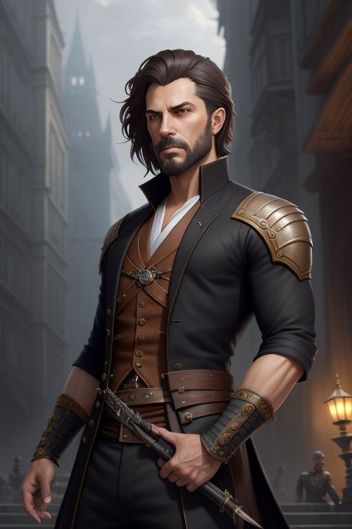

A csapat szuperhősei

Antto Niemi
Rövid leírás:
Antto Niemi egy egyszerű finn férfi volt, aki boldog életet élt kislányával, akit „angyalkának” hívott. Egy nap, amikor hazatért, a lányát súlyosan megverve és vérbefagyva találta, ami mély sebet hagyott benne. A rendőrség tehetetlen volt, így Antto saját nyomozásba kezdett, hogy megtalálja a gyilkosokat. Ahogy telt az idő, ő maga is egy megfélemlítő alak lett, aki nem tétovázott, hogy bárkit bántson, aki a nyomára akad. Az emberek "Az Angyal apjaként" ismerték őt, és Antto már nem igazságot keresett, hanem azt, hogy elérje a saját személyes igazságát.
Tudj meg többet!
Megismerem!

Lyra Callis
Rövid leírás:
Gyógyítók családjába született a legendák övezte Eira városában. Egy olyan szigeten lakott gyermekkorában amit egy átlagos ember nem láthat. Bátor, együttérző és elhivatott. Mindig próbálja a békét fenntartani, de ha szükséges, kíméletlen harcosként száll szembe az ellenfeleivel.
Tudj meg többet!